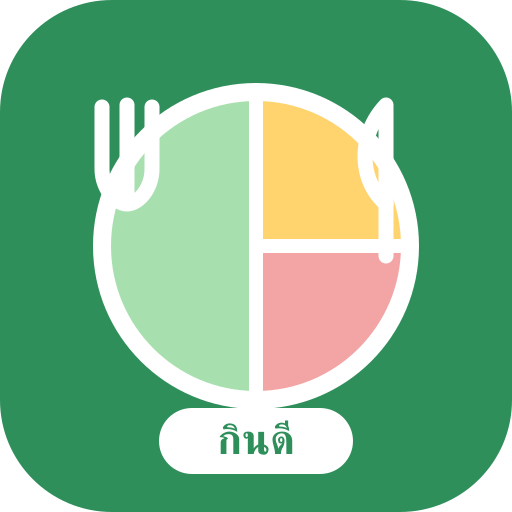

0
/ 100
เริ่มบันทึกมื้อแรกกันเลย

ต้นแบบโครงงาน I-New Gen Junior 2027
ถ่ายรูป • AI ช่วยแยกหมู่อาหาร • ผู้ใช้ตรวจผล • ดูความสมดุล
สรุปประจำวัน
คะแนนนี้ใช้เพื่อเรียนรู้พฤติกรรม ไม่ใช่คะแนนความเก่งหรือการลดน้ำหนัก
เริ่มบันทึกมื้อแรกกันเลย
น้ำเปล่า
แตะแก้วเพื่อบันทึก จำนวนเป้าหมายปรับได้ในหน้าตั้งค่า
ภาพรวมหมู่อาหาร
มื้ออาหาร
บันทึกมื้ออาหาร
อัปโหลดหรือถ่ายรูป ให้ AI ช่วยประเมินอาหารที่มองเห็น แล้วตรวจและแก้ผลก่อนบันทึก
ดูการเปลี่ยนแปลง
ใช้ข้อมูลเพื่อสังเกตและปรับพฤติกรรม ไม่ใช้เปรียบเทียบรูปร่างระหว่างเด็ก
คะแนนรายวัน
เรียนรู้โภชนาการแบบง่าย
แบ่งจานเป็นผัก 2 ส่วน ข้าวหรือแป้ง 1 ส่วน และโปรตีน 1 ส่วน แล้วเสริมผลไม้ นม และน้ำเปล่าให้เหมาะสม
สัดส่วนเป็นแนวทางสังเกตจาน ไม่ใช่ใบสั่งอาหารเฉพาะบุคคล
อาหาร 5 กลุ่ม
ผัก
ใยอาหาร วิตามิน และแร่ธาตุ
ข้าวและแป้ง
พลังงานสำหรับเรียนและเล่น
โปรตีน
ช่วยการเจริญเติบโตและซ่อมแซมร่างกาย
ผลไม้
วิตามิน แร่ธาตุ และใยอาหาร
นม
โปรตีนและแคลเซียม
ผักและผลไม้หลายสีช่วยให้เราได้สารอาหารหลากหลายขึ้น
ใช้ตัวนับแก้วน้ำเพื่อเตือนตนเองอย่างอ่อนโยน ไม่จำเป็นต้องแข่งกับคนอื่น
AI อาจทายผิด ผู้ปกครองและเด็กจึงต้องตรวจชื่ออาหาร กลุ่มอาหาร และจำนวนส่วนก่อนกดบันทึก
แหล่งเรียนรู้ที่ใช้เป็นแนวคิด
ข้อมูลในแอปเป็นสื่อการเรียนรู้และค่าประมาณ ไม่ใช้วินิจฉัยโรคหรือแทนคำแนะนำจากแพทย์/นักกำหนดอาหาร
ตั้งค่าและข้อมูลโครงงาน
ข้อมูลบันทึกเก็บในเบราว์เซอร์ของอุปกรณ์นี้ เฉพาะรูปที่ผู้ใช้กด “วิเคราะห์ด้วย AI” จะถูกส่งไปยังระบบวิเคราะห์ โดยไม่ส่งชื่อเล่น ระดับชั้น หรือชื่อโรงเรียน
จัดการข้อมูล
ก่อนล้างข้อมูล แนะนำให้กด “สำรอง JSON” ที่หน้าประวัติ
สถานะต้นแบบ
ขอบเขตต้นแบบ: AI ช่วยระบุอาหารที่มองเห็นและประเมินอาหาร 5 กลุ่ม แต่ผู้ใช้ต้องยืนยันหรือแก้ผลทุกครั้ง ค่าสารอาหารเป็นช่วงประมาณจากหน่วยส่วนอาหาร ไม่ใช่ผลตรวจทางห้องปฏิบัติการ